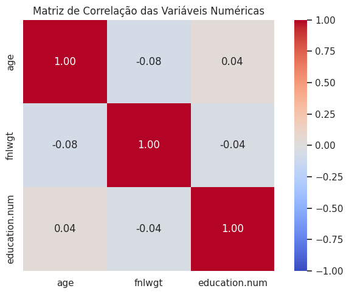
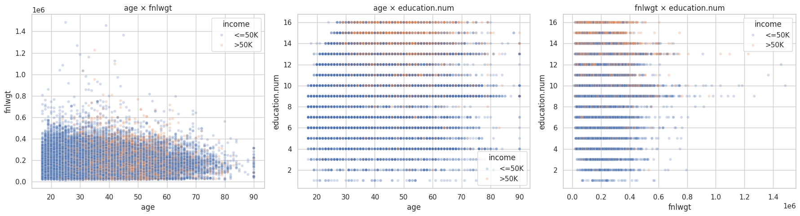
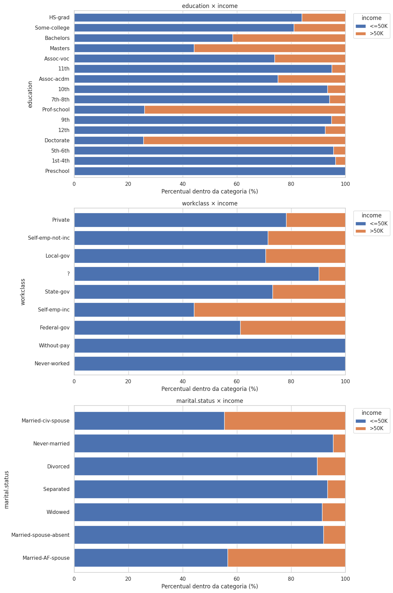
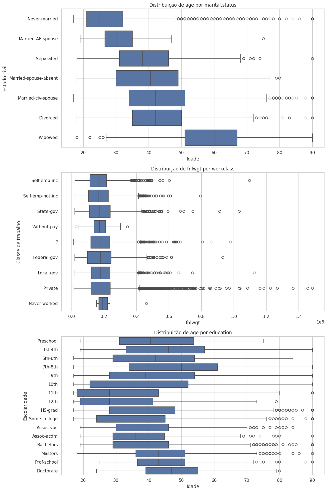

3. Análise Bivariada e Multivariada¶
Correlações entre variáveis numéricas¶
matriz_correlacao = df[NUM].corr(method="pearson")
plt.figure(figsize=(7, 5))
sns.heatmap(matriz_correlacao, annot=True, fmt=".2f", cmap="coolwarm", vmin=-1, vmax=1, square=True)
plt.title("Matriz de Correlação das Variáveis Numéricas")
plt.tight_layout()
plt.show()

fig, axes = plt.subplots(1, 3, figsize=(18, 5))
pares = [("age", "fnlwgt"), ("age", "education.num"), ("fnlwgt", "education.num")]
for ax, (x, y) in zip(axes, pares):
sns.scatterplot(data=df, x=x, y=y, alpha=0.25, s=20, ax=ax, hue='income')
plt.tight_layout()
plt.show()

Analisando as variáveis numéricas, verificam-se correlações lineares muito fracas, com coeficientes próximos de zero: −0,08 entre age e fnlwgt, 0,04 entre age e education.num e −0,04 entre fnlwgt e education.num. Os scatter plots também não apresentam tendências lineares claras, além de forte sobreposição de pontos decorrente do volume de observações e da natureza discreta de algumas variáveis.
Principais detalhes observados:
- Em
age × fnlwgt, indivíduos com renda>50Kaparecem com maior frequência nas idades intermediárias (aprox. 30–65 anos), enquanto<=50Kestá mais distribuído entre todas as idades. Nota-se também um aparente truncamento da distribuição aos 90 anos. - Em
age × education.num, os pontos formam linhas horizontais porqueeducation.numassume apenas valores inteiros. Apesar da grande sobreposição entre classes,>50Kaparece proporcionalmente mais entre adultos de idade intermediária e níveis educacionais mais altos. - Em
fnlwgt × education.num, repete-se o padrão já observado, com mais casos nos níveis 9, 10 e 13. - O padrão de linhas/colunas ocorre porque
ageeeducation.numassumem valores inteiros por natureza ordinal e discreta.
Em síntese, a coloração por income revela diferenças mais perceptíveis em relação à idade e ao nível educacional, mas nenhuma variável numérica isolada separa completamente as classes de renda — os baixos coeficientes indicam apenas ausência de relações lineares fortes, não a inexistência de associação com income.
Relações entre variáveis categóricas e o target income¶
for variavel in cols_cat_analise:
tabela_contagem = pd.crosstab(df[variavel], df["income"])
tabela_percentual = pd.crosstab(df[variavel], df["income"], normalize="index").mul(100)
tabela_percentual.plot(kind="barh", stacked=True, ax=ax, width=0.8)

As três variáveis possuem relação com income, mas em intensidades diferentes:
Associação clara entre maior escolaridade e maior proporção de renda acima de 50 mil:
Preschool,1st-4th,5th-6the níveis semelhantes: quase todos os casos em<=50K.Bachelorsjá apresenta proporção relevante de>50K.- Em
Masters, a classe>50Ksupera 50%. DoctorateeProf-schoolapresentam as maiores proporções de>50K(~74%).
Isso indica que a escolaridade provavelmente será uma variável importante para o modelo.
A proporção de >50K varia entre categorias:
Self-emp-incpossui a maior proporção de renda alta (55,9%).Federal-govtambém apresenta proporção relativamente elevada (38,7%).Private, apesar de concentrar a maioria dos registros, tem proporção menor de>50K(21,9%).Without-payeNever-workednão apresentam casos de>50K, mas têm poucos registros.
Percentuais de categorias raras são instáveis e não devem ser interpretados como regra absoluta — pode ser necessário agrupá-las em uma categoria Other.
Forte associação com o alvo:
Married-civ-spousepossui proporção consideravelmente maior de>50K(44,7%).Never-marriedconcentra quase todos os registros em<=50K(95,4%).Divorced,Separated,WidowedeMarried-spouse-absenttambém têm baixa proporção de renda alta.Married-AF-spouseapresenta proporção elevada de>50K, mas é uma categoria rara.
O gráfico mostra associação, não causalidade — parte dela pode estar ligada a outras características, como idade e ocupação.
Relações entre variáveis numéricas e categóricas¶
sns.boxplot(data=df, x="age", y="marital.status", order=ordem_marital, ax=axes[0])
sns.boxplot(data=df, x="fnlwgt", y="workclass", order=ordem_workclass, ax=axes[1])
sns.boxplot(data=df, x="age", y="education", order=ordem_education, ax=axes[2])

age × marital.status— Diferenças claras:Never-marriedtende a ser mais jovem,Widowedapresenta a maior mediana de idade;Married-civ-spouse,DivorcedeSeparatedconcentram-se em faixas intermediárias. Associação relevante entre idade e estado civil, com sobreposição entre grupos.fnlwgt × workclass— Medianas e IQRs semelhantes entre a maioria das classes de trabalho, indicando pouca diferenciação. Os numerosos outliers (principalmente emPrivate) decorrem da assimetria defnlwgte do maior número de registros nessa categoria. Relação com pouca utilidade preditiva — reforça a decisão de não usarfnlwgtcomo feature no modelo inicial.age × education— Diferenças de idade entre níveis educacionais:11th,12theSome-collegetêm medianas mais baixas, enquantoDoctorate,Masterse alguns níveis básicos têm medianas mais altas. Grande sobreposição entre grupos, sem progressão perfeitamente linear.
De forma geral, age apresenta relações relevantes com marital.status e education, enquanto fnlwgt pouco diferencia as classes de trabalho. Valores extremos observados nos boxplots não devem ser removidos automaticamente, pois podem representar observações válidas dentro de cada categoria.